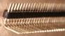
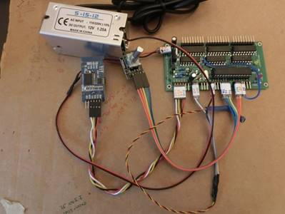

Instructie wit licht woordklok
Terug naar Start
|
Deze woordklok bestaat uit een matrix
van 11 bij 11 letters en wordt verlicht door witte LEDs.
De woordklok bestaat uit onderdelen zoals in de
tabel hieronder is weergegeven.
De woordklokonderdelen zijn voor 23x23cm en 30x30cm woordplaten
ontworpen.
In de tabel staan de prijzen
waarvoor je de onderdelen bij mij als zelfbouwpakket kan bestellen.
De klok kan ook compleet
geleverd worden.
De kosten zijn dan 400 - 500€ afhankelijk van de uitvoering en
wensen.
De kast, woordplaat en spacer
worden door een timmerman en beletteraar met de hand gemaakt.
Ze zijn uniek maar zijn daarmee een kostenpost. Zelf de kast maken
is ook een uitdaging.
Kasten kunnen van diverse soorten hardhout gemaakt worden of van MDF
zodat ze in een gewenste kleur te verven zijn.
Dezelfde klok is ook met kleuren-LEDs te maken.
Deze kleurenklok
gebruikt WS2812 RGB LEDs en heeft
minder elektronica.
De klok van 25x25 of 50x50 cm met 12x12 letters en SK6812 RGBW is hier te vinden.
|
|
De bouwtijd van een klok is 20 - 40 uur.
Het solderen van de
printplaat vereist niet veel ervaring en is de moeite waard om zelf te doen.
Een gesoldeerde printplaat is te koop voor €60.
Benodigdheden
Soldeerbenodigdheden
Multimeter
Excel-sheet van onderdelen
|
Onderdelen
|
|
Prijs
|
|
1 x Kast van hardhout of MDF op maat gemaakt door de
meubelmaker
|
|
€ 80,00
|
|
1 x Woordplaat 30x30cm Mirien/Thomaha. Vinyl op glas.
|
|
€ 60,00
|
|
1 x Spacerplaat 30x30cm, geschuimd PVC wit 10 MM RAL
9003, incl gaten
|
|
€ 30,00
|
|
PCB met onderdelen |
|
|
|
1 x Lege printplaat
|
|
€ 15,00
|
|
2 x 330Ω weerstand
|
|
€ 0,30
|
|
3 x 10kΩ weerstand
|
|
€ 0,45
|
|
1 x 4.7kΩ weerstand
|
|
€ 0,30
|
|
3 x 74HC595 8-bit shift register DIP16
|
|
€ 2,00
|
|
3 x ULN2803APG voltage regulator DIP18
|
|
€ 2,00
|
|
2 x 10 µF condensator
|
|
€ 0,15
|
|
2 x 22 pF condensator
|
|
€ 0,15
|
|
1 x 16MHz kristal
|
|
€ 0,50
|
|
1 x 1N4001 diode
|
|
€ 0,15
|
|
1 x 78L05/ L7805 voltage regulator
|
|
€ 0,50
|
|
1 x BC327 transistor
|
|
€ 0,15
|
|
1 x BC547 transistor
|
|
€ 0,15
|
|
1 x LED rood
|

|
€ 0,15
|
|
1 x LED geel
|

|
€ 0,15
|
|
1 x 28-pins voet voor ATMEGA328
|
|
€ 0,50
|
|
1 x ATMEGA328 processor
|
|
€ 7,50
|
|
1 x Dupont-kabel vrouw-vrouw 20-aderig
|
|
€ 3,00
|
|
2 x pinheader 40 pins haaks
|

|
€ 1,50 |
|
1 x KY-040 Keyes Rotary Encoder
|

|
€ 2,00 |
|
1 x RCT DS3231 Precisie klok module ZS-042
|

|
€ 5,00
|
|
1 x CR 2032 3V lithium batterij
|

|
€ 3,00
|
|
1 x lichtsensor
|
|
€ 0,85
|
|
1 x 22kΩ weerstand
|
|
€ 0,15 |
|
Voeding en verlichting |
|
|
|
1 x Voeding 12V gelijkstroom, 1,25 Ampere
|
|
€ 10,00
|
|
1 x Stroom Aansluitkabel Euro-stekker – Kabel, open
einde Zwart 1.50 m
|
|
€ 5,00
|
| 1 x Adapter 12V gelijkstroom, 1 Ampere (dan
geen 220V in de klokkast) |
|
€ 10,00 |
|
1 x 50 cm zwart-rood voedingskabel (0.14 mm2)
|
|
€ 0,20
|
|
1 x Female 5.5 x 2.1mm DC Power plug |
|
|
€ 2,00
|
|
1 x Verlichtingsgrondplaat 3 x 300 x 300 mm MDF-plaat
|
|
€ 3,00
|
|
3 x 9-pin Dupont female connector
|
|
€ 3,00
|
|
1 x 10 m wire wrapping 30 AWG = 0.05
mm2 rood
|
|
€ 2,00
|
|
1 x 10 m wire wrapping 30 AWG = 0.05 mm2 zwart
|
€ 2,00
|
|
1 x 1 m wire wrapping 30 AWG = 0.05 mm2 geel
|
€ 0,20
|
|
1 x set krimpkous 100 cm x 1.5 mm diam + 10 cm x 5 mm
diam
|
|
€ 3,00
|
|
1 x 2 meter Cool White SMD 2835/3528,
120 LEDS/meter, LED-strip 12V
|

|
€ 15,00
|
|
|
|
|
|
Optioneel
|
|
|
|
FT232RL 5.5V FTDI USB to TTL Serial
Module + 0.1uF+10 kΩ
|
|
€ 15,00 |
|
Wireless Serial 6 Pin Bluetooth RF Transceiver Module HC05 (Android, W10) |
|
€ 10,00 |
|
Wireless Serial 6 Pin Bluetooth RF Transceiver Module HM10
(Android, Apple IOS) |
|
€ 10,00 |
| DCF77 DCF-2 module |
|
€ 20,00 |
|
Gesoldeerde en geteste printplaat
|
|
€ 60,00
|
|
Gesoldeerde en geteste verlichtingsplaat |
|
€ 110,00 |
Hoe werkt de printplaat:
De Arduino-software (Sourcecode
van de software of
Github) stuurt een 24-bits code naar de drie 74HC595 8-bit shiftregisterchips via pin 10. Pin 11 en 12 dienen om
de 74HC595-chip te synchroniseren.
Pin 9 stuurt de gele LED aan en pin 13 de rode LED.
Aan de andere zijde van de 74HC595-chip zal bij een
gestuurde 1-bit een 5V spanning staan en bij een gestuurde 0-bit 0V. Omdat de spanning van 5V te
laag is om de licht-LED’s, die achter de woorden zitten, aan te sturen zijn de
ULN2803APG voltage regulator chips geplaatst. De transistoren in deze chip zorgen ervoor
dat het 5V-signaal in een 12V
voedingsspanning voor de LED wordt . Deze chips zijn krachtig genoeg om voldoende stroom te leveren om de licht-LED’s
te laten branden.
De licht-LED’s geven te veel licht als het donker wordt en
moeten gedimd worden. Dat kan met een gloeilamp door de spanning te verlagen
maar bij LED’s werkt dat in een beperkt spanningsgebied. De truc is om de stroom
te pulsen. Dus de LED’s meerdere keren per seconden aan en uit te zetten. Als je
dan met een frequentie van meer dan 50Hz doet dan ziet ons oog dat niet. Hoe
lichter het moet zijn hoe langer de aan-puls. De lichtsensor (LDR) meet de
lichtintensiteit en dit analoge signaal komt binnen op pin A2. De software
berekent de lengte van de puls en stuur het pulsesignaal naar pin 5. De twee
diodes BC547 en BC327 maken van dit 5V signaal een 12V signaal dat via een diode
op de pluspool van de licht-LED’s wordt gezet.
De RST, RX en TX poort van de Arduino-chip kunnen worden
gebruikt om software te laden in de chip maar wordt ook gebruikt om diverse meetwaarden uit te lezen
zoals de lichtsensor.
Hiervoor is een zogenaamde “FT232RL 3.3V 5.5V FTDI USB to
TTL Serial Adapter Module” nodig.
samen met een een weerstand en
een condensator kan deze op de RST, RX en TX pinnen worden aangesloten.
Je kan
ook de ATMEGA 328-chip een Arduino UNO zetten en dan
programmeren.
Het kristal met 16000 er op is het hart van de processor en
geeft de processor opdracht om 16 miljoen keer per seconde een processtap uit te
voeren.
De 10 uF-condensatoren zorgen er voor dat stroomrimpels gedempt
worden.
De printplaat solderen
Op de printplaat staat aangegeven waar de diverse
onderdelen gesoldeerd moeten worden.
Let op de inkepingen aangegeven op de IC’s en printplaat!
Als alles op zijn plek gesoldeerd is meet dan of de
printplaat geen kortsluiting heeft.
De weerstand tussen 5V en GND is >5kΩ. De weerstand tussen
12V en GND >5kΩ.
De weerstand loopt langzaam op tijdens het meten
omdat de 10 µF condensatoren door de meting met de multimeter vol raken.
Vergeet niet een draad
vanuit het midden van de printplaat, bij de schuin geplaatste weerstand, aan P5
te solderen.
Breek de haakse pinheaders op lengte met behulp van een
puntbektang en soldeer ze aan de printplaat.
Plaats de ATMEGA 328-processor in de voet. Let op de
inkeping!
De laatste stabiele
softwareversie is V108. Deze ondersteund de rotary encoder draaiknop,
Bluetooth en de DCF-ontvanger
Onderin deze pagina of op Github zijn hyperlinks naar andere
stabiele versies te vinden.
De lichtsensor
Knip drie draden van 20-30 cm.
Schuif eerst de krimpkousen aan de poten van de LDR.
Soldeer de lichtsensor en de 22kΩ weerstand zoals
aangegeven in de foto.
Soldeer de gele draad aan de connector die gelabeld wordt
met A2
Soldeer de zwarte draad aan de aarde.
Soldeer de rode draad aan 5V.
Monteer alle open verbindingen af met krimpkous en krimp ze
met hete lucht.
Label de aansluitingen met een sticker.

De draaiknop (Rotary encoder KY-040)
Verbind de 5 vrouw-vrouw Dupont-kabels recht door.
CLK naar P8 (Voor de softwareversie V080 was dit P2)
DT naar P3
SW naar P4
Plak deze drie aansluitingen met een stikker bij elkaar
+ naar 5V
GND naar GND
Plak deze twee aansluitingen met een stikker bij elkaar
Label de aansluitingen.
De klok
Verbind de 4 vrouw-vrouw Dupont-kabels recht door.
SCL naar A5.
SDA naar A4.
Plak deze drie aansluitingen met een stikker bij elkaar.
VCC naar 5V.
GND naar GND.
Plak deze drie aansluitingen met een stikker bij elkaar.
Label de aansluitingen.
De voeding
Maak het koper vrij aan de vier uiteinden van de twee-aderige
draad en breng soldeer aan.
Sluit de 12V-voeding aan op de 12V-aansluiting rechts
bovenin de printplaat.
Dat kan door middel van een Dupont-kabelstekkers of direct
aan de printplaat gesoldeerd.

De grondplaat met
verlichting
Plak een wit vel A4 op de grondplaat waar de LED-verlichting
op wordt geplakt.
Gebruik de spacerplaat om de kaders met een potlood op de
template aan te geven.
Je kunt de LED-strip knippen per drie LED’s. De knipplaats
is duidelijk op de strip aangegeven.
Plak het volgende aantal stukjes 3-LED-strips over de tekst
van het sjabloon.
Let er op dat de plus steeds aan de bovenkant van de
geplakte strip zit
|
|
30 cm
|
23 cm
|
|
HET
|
2
|
2
|
|
IS
|
1
|
1
|
|
WAS
|
2
|
2
|
|
VIJF
|
3
|
2
|
|
TIEN
|
3
|
2
|
|
KWART
|
4
|
3
|
|
VOOR
|
3
|
2
|
|
OVER
|
3
|
2
|
|
PRECIES
|
5
|
4
|
|
HALF
|
3
|
2
|
|
ELF
|
2
|
2
|
|
VIJF
|
3
|
2
|
|
TWEE
|
3
|
2
|
|
EEN
|
2
|
2
|
|
VIER
|
3
|
2
|
|
TIEN
|
3
|
2
|
|
TWAALF
|
4
|
3
|
|
DRIE
|
3
|
2
|
|
NEGEN
|
4
|
3
|
|
ACHT
|
3
|
2
|
|
ZES
|
2
|
2
|
|
ZEVEN
|
4
|
3
|
|
UUR
|
2
|
2
|
|
RESERVE
|
5
|
5
|
|
Totaal
|
72
|
56
|
Knip een benodigde lengte af en soldeer een rode en een
zwarte wire-wrapdraad.
Plak de LED-strips op de verlichtingsgrondplaat en zorg dat
de plusaansluiting aan de bovenkant zit.
In de woorden PRECIES en TWAALF passen de LEDs passen niet
over de hele breedte.
Knip de LED-strip in
twee stukken en verdeel deze. Zie foto.
Soldeer de LEDS-strips onderling weer vast met een draad.
Boor gaten van 2 mm naast de aansluitingen van de LED-strip.
Nummer de aansluitingen op de achterkant 1 t/m 23. 1 = HET,
2=IS, ect, 23 = UUR.
Nummer 24 is reserve.
Deze nummering gebruik je straks om de draden aan de juiste
aansluiting te solderen.
Breng soldeer aan op de LED-stripaansluiting en soldeer
later de draad erin.
Rode draad aan plus, zwarte draad aan de min.
Controleer of de LED’s branden met een 9V batterij.
Stikker drie 9-pins Dupont-vrouw aansluitstekkers als op
de foto.
Met de draden naar rechts, stekker links
|
8
|
16
|
24
|
------------
|
|
7
|
15
|
23
|
------------
|
|
6
|
14
|
22
|
------------
|
|
5
|
13
|
21
|
------------
|
|
4
|
12
|
20
|
------------
|
|
3
|
11
|
19
|
------------
|
|
2
|
10
|
18
|
------------
|
|
1
|
9
|
17
|
------------
|
|
+
|
+
|
+
|
------------
|
Controleer de nummering van de stekkers met die op de
printplaat.
Bundel de rode draden van de eerste acht LED-strips en
soldeer ze aan elkaar.
Schuif er een krimpkous overheen en soldeer de + draad van
de 9-pins Dupont-vrouw aansluitstekker vast
Krimp de kous met hete lucht of de soldeerbout vast.
Schuif een cm 1.5mm krimpkous over de draden van de
aansluitstekker.
Sluit de zwarte draad van LED-strip 1 aan op aansluiting 1
van de 9-pins Dupont-vrouw aansluitstekker.
Krimp de krimpkous met hete lucht of de soldeerbout.
Herhaal dit voor alle drie de stekkers en 23 aansluitingen.
Aansluiting 24 is een reserve-aansluiting. Soldeer er een
stukje LED-strip aan vast en laat die in de kast als reserve LED’s.
De klok in elkaar zetten
Het is handig om de onderdelen van de klok met papier
afplakband vast te plakken. Dit plakband komt makkelijk los.
Plat de verlichtingsplaat en spacer aan elkaar vast.
Plak over de spacer een wit vel papier. Bij een 30x30 cm
klok is een A3-vel nodig of twee aan elkaar geplakte A4-tjes. Zorg en dan voor
dat het plakbank niet door de letters te zien is. Het papier geeft een mooie
tekening aan de verlichte letters. Gebruikt niet te goedkoop papier. Mogelijk
dat dit op de duur verkleurd.
Leg de woordplaat over het papier en fixeer deze ook met
plakband.
Bij een hardhouten klok wordt, afhankelijk van de
uitvoering, de woordplaat in de sleuf in de kast geschoven. Monteer daarna de
vierde, onderkant van de kast. Verlijm dit of plak het met plakbank tijdelijk
vast. Zie: “Ontwerp kast 30 cm-klok”.
Als alles goed gelabeld is kunnen de klok, rotary encoder,
LDR, voeding aangesloten worden.
Monteer de kast af.
Als alles goed is gegaan ziet de binnenkant er ongeveer zo
uit.
NB De uitvoering op defoto is een hardhouten kast van
30x30 cm en drukknoppen in plaats van een rotary encoder.
FTDI-board aanpassen om de klok te programmeren en de
seriële poort uit te lezen.
Met een FTDI-board kan de ATMEGA328-chip verbonden worden
met de Arduino programmeersoftware op de PC.
De software in de klok geeft informatie, zoals de tijd,
door naar de PC via deze verbinding maar de ATMEGA328 kan zo ook geprogrammeerd
worden. Om het geheel te laten werken moet de FT232RL 5.5V FTDI USB to TTL
Serial Module aangepast worden.
Een 100 nF condensator wordt tussen de DTR-pin van de FTDI
en de RST-pin van het klokboard gesoldeerd. Een 10 kΩ weerstand wordt tussen 5V
en de RST-pin van het klokboard gesoldeerd.
Deze
schakeling is nodig om software in de ATMEGA328 te kunnen laden. In de ATMEGA328
zit een programma (een bootloader) dat start en heel kort wacht op een programma
dat in de chip moet worden gezet . Komt dat programma niet dan start het
klokprogramma op. Met de DTR-pin wordt de chip gereset zodat de bootloader
start. De Arduino IDE-software op de PC zorgt voor deze aansturing als een
programma "geupload" wordt.
Let op dat TX en RX gekruist worden. TX aan RX en RX aan
TX.
Laat de USB-stekker niet in de computer zitten als
de klok op 220V draait en de computer uitgezet wordt.
Er loopt dan stroom van de klok naar de PC met als resultaat dat onderdelen op
de printplaat defect raken.
Een diode op de 5V aansluiting voorkomt deze storing
niet.
Mogelijk moet er tussen TX- en RX-datalijnen ook nog een diode geplaatst worden.
Bluetooth-verbinding
Met de
Bluetooth-module kan er een Bluetooth-verbinding met de klok gemaakt
worden.
In onderstaande hoofdstuk staat beschreven aan welke pins
de module aangesloten en hoe de naam van de module aangepast wordt.
Met een Bluetooth-terminal app op de telefoon kan de tijd
als hhmmss of hhmm naar de klok gestuurd worden.
De klok stuurt elke halve minuut gegevens, naar de terminal app
terug.
Voor Android en Iphone zijn Bluetooth terminal apps te
vinden.
Bluetooth terminalprogramma’s zijn ook voor PC’s te vinden.
Aansluiting van een Bluetooth-module aan de klok
De Bluetooth-module communiceert tussen RX en TX met 3.3V.
Het is mogelijk om de module direct op de 5V Arduino-poorten aan te sluiten maar
het verlengt de levensduur van de module als de spanning naar 3.3V wordt
verlaagd.
Dit kan met een 3.3V-5V TTL Level Logic Level
Converter module, of met een “voltage divider”-schakeling zoals hieronder
weergegeven.
Je kan de weerstanden in de bedrading
van de module naar de printplaat monteren.
In de
software is de Bluetooth-module op pin 6 en 7 aangesloten.
BT_RX = 6, // Bluetooth RX connect to TXD op de BT
module
BT_TX = 7, //
Bluetooth TX connect to RXD op de BT module
Verbind
- VCC aan
5V
-
GND aan GND
- pin 6 aan de TXD van de Bluetooth-module
- pin 7 aan de RXD van de Bluetooth-module

Communiceren via Bluetooth met de HM10 BLE voor
Apple IOS en Android
Met de HM10 BLE module kan draadloos
gecommuniceerd worden met Apple IOS en Android.
Er moet dan wel met het programma BLE scanner (App
store) contact worden gemaakt. Dit programma zorgt dat het HM10
communicatieprotocol geinstalleerd is. (Of je dit programma echt nodig hebt
is mij onduidelijk. Mogelijk dat nieuwere versies van de telefoon dit niet
meer nodig heeft)
Met BLE scanner kan de HM10-module "Connect"
worden.
Daarna kan met een serial terminal programma (Voor
IOS "HM10 Bluetooth serial light"-app van Alex van der Lugt of "BLE Terminal
HM-10") commando's worden overgestuurd en de klokuitvoer opgevangen
worden.
Voor Android kan het programma BLE scanner van Blue Pixel Technologies
LLP geinstalleerd worden.
Serial Bluetooth Terminal van Kai Morich werkt
goed als terminal.

Connect met BLE scanner of met de serial
terminal programma (heb geduld, het kan wel 5 minuten duren voordat je de
naam van de module te zien krijgt).
Gebruik het Serial Bluetooth Terminal
voor de communicatie.
Als de i van Info wordt ingetikt verschijnt het
menu in het terminalprogrammavenster
"Woordklok nov 2019",
"Enter time as: hhmm (1321) or hhmmss (132145)",
"Enter A for normal display",
"Enter B to suspress Het Is Was in display",
"Enter C to suspress Het Is Was after 10
seconds",
"Enter D
D15122017 for date 15 December 2017",
"Enter G for DCF-signal info on display",
"Enter Mnn (M90)Max light intensity (1% - 250%)",
"Enter Lnn (L5) Min light intensity ( 1 - 255)",
"Enter I for info",
"Enter X for Demo mode",
"Enter Z for Self test",
"Ed Nieuwenhuys V108 September 2019" };
Met A, B of C als commando kan HET IS WAS aan of uit
worden gezet. C laat HET IS WAS 10 seconden zien.
Met D kan de datum
gecorrigeerd worden. Voor de werking van de tijd in de klok heeft dit geen
effect
Met G kan het ontvangen DCF-signaal aan de voorkant van de klok in
de woorden HET IS WAS gevolgd worden.
De DCF-ontvangst
die bij goede ontvangst regelmatig eens per seconde knippert is ook te zien
in de LED op de printplaat maar dat in bij een dichte kast lastig te zien.
Met Mnnn, waarin n een getal tussen 0 en 250 is, kan de sterkt van de
LED's aangepast worden.
Normaal is 60-80 als
de LDR goed geplaatst is.
Met Lnnn kan de laagste lichtsterkte
ingesteld worden.
Als de LDR nog nauwelijks
signaal ontvangt zijn de ontvangen waarden 0, 1, 2 et cetera. Dit
veroorzaakt gespring in lichtsterkte. L5 is een mooie ondergrens.
Met I wordt het menu getoond.
X is de demo-mode
Invoer van Z
start een zelftest om de werking van de LED's te controleren
De naam aanpassen van de Bluetooth
module HM10 BLE
Gekoppeld via een FTDI kan in de Arduino IDE
met "Serial monitor" aan de Bluetooth-module AT commandos gegeven worden.
Verbind de 5V en GND met elkaar en RX aan TX en
TX aan RX.
Verbind de FTDI aan de USB-poort van de PC.
Start de Arduino-console en kies de COM-poort Bij
Tools in het menu. Start de Serial monitor (Icoon lijkend op een
vergrootglas, Onder het X rechts boven).
Tik AT en return. Je ziet OK in het scherm
verschijnen.
Zie vorige paragraaf voor AT commando's.
AT+NAMEnieuwenaam geeft de module de naam: nieuwenaam

DCF77 ontvangst met DCF-2
module
NB Om het DCF-signaal te kunnen ontvangen is V090 of hoger
van de woordklok-software nodig.
Deze DCF77-module heeft drie aansluitingen; +, - en
signal.
Sluit de + aan op 5V en de - op GND.
Signal gaat naar pin 2.
NB Pin 2 werd gebruikt voor de rotary encoderPinB left
(labeled CLK on decoder). Deze wordt nu aangesloten op P8.
(Pin 2 is een interrupt pin. Voor een optimale DCF-ontvangst
is het reageren op een interrupt noodzakelijk voor de rotary encoder niet.
Kijk in de source van de versie van de software
onder "PIN assigments" voor de juiste aansluiting.
Een, waarschijnlijk goedkope, 12V 220V
Voeding in de klok stoort de DCF-ontvangst. Gebruik een externe adapter van 'goede'
kwaliteit.
Hier wat
achtergrondinformatie
over DCF.
FM-radio tijdontvangst
De FM
RDA RDA5807M-radiomodule kan naast radiozenders ook het RDS-signaal opvangen.
In het RDS-signaal wordt naast de zendernaam zenderinformatie en eenmaal per
minuut de tijd doorgegeven.
Niet elke zender zendt de tijd door en ook niet elke
zender is even accuraat.
Deze module kan vanaf V090 op de klok aangesloten
worden en met de seriële poort of de Bluetooth-aansluiting
aangestuurd worden. Er kan dan een zender gekozen
worden waarvan de tijd uitgelezen wordt.
Aan de module worden eerst 2 maal 5 pin headers
gesoldeerd. Met een beetje buigen lukt dat prima
Daarna wordt SDA en SCL aan de SDA en SCL poorten
van de clock-module gesoldeerd.
De 3.3V voedingsaansluiting van de FM-module kan aan
een stepdown 3.3 volt module worden aangesloten of met voltage divider verlaagd
worden.
Zie de schakeling hierboven, bij de Bluetooth-module,
hoe je met een voltage divider van 5V 3.3V maakt.
Sluit een lange draad (>70 cm) op de antenne-ingang
aan.
Je kan oortelefoonspeakers op R-out en L-out en GND of
een >=64 ohm speaker aansluiten om geluid te horen.

LED-strips
Onderstaande LEDs worden in de klok voor de
verlichting van de letters gebruikt.
5M 2835 Cool/Warm White SMD LED
Non-waterproof 600 led Strip Light
5M 3528 Cool/Warm White SMD LED Non-waterproof 600 led
Strip Light
De 2835 LED is zuiniger en geeft meer licht. Voor de klok
maakt het niet uit welke strip genomen wordt. Let er op dat er 120 LEDs per
meter (600 per 5 meter) zijn en de voedingsspanning 12V is.
Energieverbruik klok
De 30x30 cm klok verbruikt bij 12V met de 3528 LEDs
minimaal 50 mA als het donker is en de LEDs bijna volledig gedimd zijn . Bij
volle sterkte loopt het verbuik naar 120mA op.
Bij het starten, als alle LEDs branden, is het verbruik
tussen de 200 en 250mA.
Source code
Sourcecode van diverse versies
Of op Github
https://github.com/ednieuw/WordClock-WhiteLEDs
Terug naar Startpagina
Ed Nieuwenhuys, 13 Nov 2020
Jan 2017 - Augustus 2020
Voor als je nog een HC-05 module gebruikt
De naam aanpassen van de Bluetooth module
HC-05/ZS-040
Met een Android-telefoon kan een HC-05 Bluetooth-module nog
gebruikt worden. Deze modules zijn vaak erg goedkoop
De naam waaronder je de module in de telefoon kan vinden is
HC05 of iets dergelijks.
Om de module een beter herkenbare naam te laten
uitzenden kan de naam worden anagepast.
De Bluetooth-module dient hiervoor
aan een Arduino te worden gekoppeld en in programmerstand te worden gezet.
dit gaat als volgt:
- Verbind VCC en GND, pin 6 aan de TXD en pin 7 aan RXD
van de Bluetooth-module.
- Laad de volgende sketch om tussen de Arduino en de
Bluetoothmodule te kunnen communiceren en de naam te veranderen.
-------------------------
- #include <SoftwareSerial.h>
- SoftwareSerial BTSerial(6, 7);
// RX | TX
- void setup()
- {
-
pinMode(9, OUTPUT); // this pin
will pull the HC-05 pin 34 (key pin) HIGH to switch module to AT mode
- digitalWrite(9, HIGH);
- Serial.begin(9600);
- Serial.println("Enter AT
commands:");
- BTSerial.begin(38400); //
HC-05 default speed in AT command more
- }
-
- void loop()
- {
- // Keep reading from HC-05
and send to Arduino Serial Monitor
- if (BTSerial.available())
- Serial.write(BTSerial.read());
-
- // Keep reading from Arduino
Serial Monitor and send to HC-05
- if (Serial.available())
- BTSerial.write(Serial.read());
- }
---------------------------------
- Ontkoppel de Arduino van de USB-kabel zodat de Arduino en
Bluetoothmodule spanningsloos zijn geworden.
- Leg een draadje tussen de 5V van de Arduino en pin 34. (rechtsboven
in de Bluetooth-module als de pinnen naar beneden wijzen. Zie foto).
- Sluit de Arduino weer op de PC aan en open de serial
monitor in de Arduino software. (icoon rechtsboven onder X (kruisje)).
- De rode LED op de Bluetooth-module gaat nu langzaam 2 sec
aan, 2 sec uit, knipperen.
-
Tik in:
----------------
AT --> Dit geeft
OK
terug
AT+NAME=KLOK
AT+RESET
------------------
De default
passkey = 1234
--------------------------
Here is an important note, if the key
pin is not high, i.e. not connected to VCC while receiving AT commands(if you
did not solder the wire and released it after the module entered AT mode), it
will not show the default name even after giving right command. But you can
still change the name by the command mentioned above. To verify if the name has
really changed, search the device from your pc/mobile. The changed name will
appear. To change baud rate, type AT+UART=desired baud rate. Exit by sending
AT+RESET command.
Most useful AT commands are:
AT : Check the connection.
AT+NAME : See default name
AT+ADDR : see
default address
AT+VERSION : See version
AT+UART : See baud rate
AT+ROLE: See role of bt module(1=master/0=slave)
AT+RESET : Reset and exit AT
mode
AT+ORGL : Restore factory settings
AT+PSWD: see default password
{kind=link}